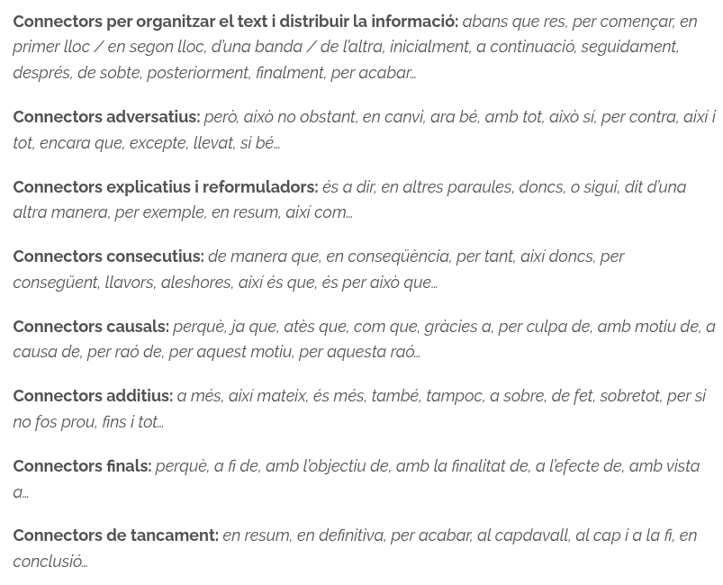

Què és un text argumentatiu?
Un text argumentatiu és un text en què l’autor ofereix informació amb l’objectiu d’ampliar o transformar els coneixements del lector.
Un text argumentatiu és un text en què l’autor ofereix informació amb l’objectiu d’ampliar o transformar els coneixements del lector.
L’objectiu és convèncer el lector. Per aconseguir-ho, no n'hi ha prou amb expressar el teu punt de vista, sinó que cal justificar-lo amb raonaments i comparar-lo amb opinions oposades. Aquest procés rep el nom d’‘argumentar’.
Qualsevol idea que serveixi per donar suport a una tesi constitueix un argument. Alguns exemples són:
Arguments causals: són els arguments que es fonamenten en la relació de causa i conseqüència.
És necessari controlar els vessaments per tal de preservar el medi ambient.
Si vols que et contractin, hauràs d’aprendre a fer-te valer durant les entrevistes de feina.
Arguments d’autoritat: són els arguments que es basen en el prestigi o la legitimitat d’algú altre —l’autoritat— que sustenta la mateixa tesi
La notícia sobre la detenció ha estat corroborada pel ministre de l’Interior.
Tothom coincideix en la superioritat d’aquest candidat.
No s’ocupa gens dels seus germans: per exemple, no els ha portat mai al cinema.
El primer paràgraf ha de ser una introducció al tema que vols tractar. Sigues directe i digues quin és el teu posicionament respecte de la polèmica.
De manera clara i ordenada, desenvolupa els arguments que et serveixin per defensar la teva tesi. T’aconsello que escriguis un paràgraf per a cada argument (com a mínim) i que els introdueixis amb connectors adients.

El darrer paràgraf ha de servir per recuperar les idees clau que has exposat. Repeteix la tesi de manera ferma. És l’última oportunitat que tens per convèncer el lector; per tant, tria bé les paraules, interpel·la l’emoció.

Llicenciat sota la Llicència Creative Commons Reconeixement CompartirIgual 4.0